- 여러 범주의 Area chart를 누적하면 stacked chart plot이 됩니다.
- Matplotlib의
stackplot()함수를 사용하면 쉽게 그릴 수 있습니다. baseline옵션으로 모양을 제어합니다.- kaggle에서 받아온 영화 데이터로 그려봅시다.
1. Stackplot and Streamgraph
matplotlib: Stackplots and streamgraphs
Lee Byron: Stacked Graphs
Alberto Cairo: One of the worst graphics in the New York Times have published - ever!
- x축에 따라 변하는 y를 표현하는 방법은 여러가지가 있습니다.
- 도형의 점, 선, 면 중 어떤 속성을 이용하느냐에 따라 전달되는 메시지가 다릅니다.
- Area plot(영역 차트)는 면을 이용하며 전체 공간 중의 비율을 전달하며, 범주들 간의 비율을 비교하는 데도 유용합니다.
- Streamgraph는 Area chart의 전체 데이터에 기반해 baseline을 조정한 것입니다.
- 위 아래로 요동을 치며 물감이 섞이는 듯한 형상이 연출됩니다.
- 그러나 너무 현란한 나머지 데이터를 알아보기 어렵다는 비판을 받기도 합니다.
- Matplotlib의 둘을 비교하는 예제를 약간 수정하여 보여드립니다.
코드 보기/접기
1
2
3
4
5
6
7
8
9
10
11
12
13
14
15
16
17
18
19
20
21
22
23
24
25
26
27
28
29
30
31
32
33
34
35
36
37
38
39
40
41
42
43
44
45
46
47
48
49
50
51
52
53
54
55
56
57%matplotlib inline
import numpy as np
import matplotlib.pyplot as plt
import seaborn as sns
sns.set_palette("Pastel1")
# data from United Nations World Population Prospects (Revision 2019)
# https://population.un.org/wpp/, license: CC BY 3.0 IGO
year = [1950, 1960, 1970, 1980, 1990, 2000, 2010, 2018]
population_by_continent = {
'africa': [228, 284, 365, 477, 631, 814, 1044, 1275],
'americas': [340, 425, 519, 619, 727, 840, 943, 1006],
'asia': [1394, 1686, 2120, 2625, 3202, 3714, 4169, 4560],
'europe': [220, 253, 276, 295, 310, 303, 294, 293],
'oceania': [12, 15, 19, 22, 26, 31, 36, 39],
}
def gaussian_mixture(x, n=5):
"""Return a random mixture of *n* Gaussians, evaluated at positions *x*."""
def add_random_gaussian(a):
amplitude = 1 / (.1 + np.random.random())
dx = x[-1] - x[0]
x0 = (2 * np.random.random() - .5) * dx
z = 10 / (.1 + np.random.random()) / dx
a += amplitude * np.exp(-(z * (x - x0))**2)
a = np.zeros_like(x)
for j in range(n):
add_random_gaussian(a)
return a
fig, axs = plt.subplots(ncols=2, constrained_layout=True,
figsize=(10, 4))
# stacked area plot
axs[0].stackplot(year, population_by_continent.values(),
ec="k", lw=0.3,
labels=population_by_continent.keys())
axs[0].legend(loc='upper left')
axs[0].set_xlim(1950, 2018)
axs[0].set_title('Stacked Area Plot: World population')
axs[0].set_xlabel('Year')
axs[0].set_ylabel('Number of people (millions)')
# streamgraph
np.random.seed(20210809)
x = np.linspace(0, 100, 101)
ys = [gaussian_mixture(x) for _ in range(5)]
axs[1].stackplot(x, ys,
labels = [f"dummy{i}" for i in range(1, 6)],
ec="k", lw=0.3, baseline='wiggle')
axs[1].set_xlim(0, 100)
axs[1].legend(loc='upper left')
axs[1].set_title('Streamgraph: Arbitrary Data')
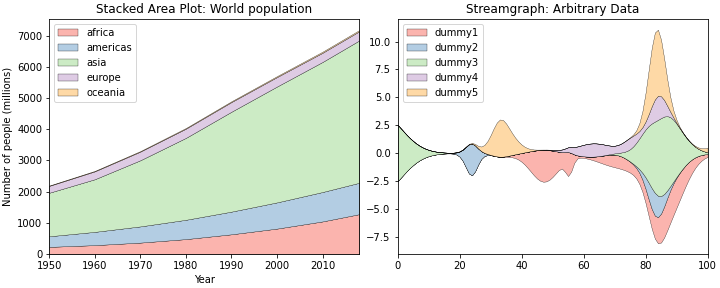
2. Data
2.1. Kaggle에서 데이터 검색
kaggle: How to Use Kaggle
Techno Whisp: Kaggle API- The Missing Python Documentation
- kaggle에는 좋은 데이터가 많이 있습니다.
- 홈페이지를 들어가서 클릭하며 다니지 않아도 API로 데이터 등을 다운로드 받을 수 있습니다.
- 공식 홈페이지에 CLI 명령이 나와있습니다.
- python에서 kaggle을 활용하는 방식은 이 블로그를 참고합시다.
먼저 API를 활성화합니다.
사전에 kaggle에 가입하고 API를 받아 계정 아래의
./kaggle/디렉토리kaggle.json파일에 담아야 합니다.1
2
3from kaggle.api.kaggle_api_extended import KaggleApi
api = KaggleApi()
api.authenticate()영화 데이터셋을 검색합니다.
CC 라이센스를 가진 csv 타입의 데이터셋을 검색합니다.
데이터셋 중 movies라는 이름을 포함한 데이터를 찾아봅니다.
1
2# search dataset: movie
api.dataset_list(search="movies", license_name="cc", file_type="csv")- 실행 결과:
1
2
3
4
5
6
7
8
9
10
11
12
13
14
15
16
17
18
19
20[shivamb/netflix-shows,
stefanoleone992/imdb-extensive-dataset,
harshitshankhdhar/imdb-dataset-of-top-1000-movies-and-tv-shows,
ruchi798/movies-on-netflix-prime-video-hulu-and-disney,
sankha1998/tmdb-top-10000-popular-movies-dataset,
jrobischon/wikipedia-movie-plots,
danielgrijalvas/movies,
adrianmcmahon/imdb-india-movies,
rashikrahmanpritom/disney-movies-19372016-total-gross,
stefanoleone992/filmtv-movies-dataset,
unanimad/disney-plus-shows,
pradyut23/movies,
mathurinache/women-in-movies,
stefanoleone992/rotten-tomatoes-movies-and-critic-reviews-dataset,
dionisiusdh/imdb-indonesian-movies,
therealsampat/disney-movies-dataset,
rashikrahmanpritom/heart-attack-analysis-prediction-dataset,
satpreetmakhija/netflix-movies-and-tv-shows-2021,
paramarthasengupta/top-movies-database-19202000s,
javagarm/movies-on-ott-platforms]
- 실행 결과:
2.2. Kaggle에서 데이터 다운받기
하나를 고릅니다.
stefanoleone992/imdb-extensive-dataset이 느낌이 좋습니다.Kaggle API를 사용해서 데이터셋에 어떤 파일이 있는지 살펴봅니다.
1
2dataset = 'stefanoleone992/imdb-extensive-dataset'
api.dataset_list_files(dataset).files- 실행 결과:
1
[IMDb ratings.csv, IMDb names.csv, IMDb title_principals.csv, IMDb movies.csv]
- 실행 결과:
데이터셋 파일을 다운로드 받습니다.
데이터셋 이름.zip 형식으로 되어 있습니다.
1
2
3
4
5# 전체 데이터셋 다운로드
api.dataset_download_files(dataset)
# 개별 파일 다운로드: 특정 파일만 다운받고 싶으면 이렇게 하면 됩니다.
# api.dataset_download_files(dataset, 'IMDb movies.csv')압축을 해제합니다.
주피터 노트북에서 실행하는 리눅스 명령이라 앞에 !를 붙입니다.
1
!unzip "{dataset.split('/')[1]}.zip"
- 실행 결과: 압축이 해제되었습니다.
1
2
3
4
5Archive: imdb-extensive-dataset.zip
inflating: IMDb movies.csv
inflating: IMDb names.csv
inflating: IMDb ratings.csv
inflating: IMDb title_principals.csv
- 실행 결과: 압축이 해제되었습니다.
2.3. 데이터 들여다보기
- 받은 데이터에 필요한 요소가 있는지, 구성은 어떤지 등을 확인합니다.
- 데이터를 받고 보니 이게 아니다 싶으면 다시 검색하고 받아야 합니다.
- 사실 글을 쓰기 전까지 이 과정을 몇 차례 거쳤습니다. 지루한 내용은 생략하겠습니다.
- 예를 들어 영화 평점을 분석하고 싶다면, 다운받은
IMDb movies.csv파일과IMDb ratings.csv파일을imdb_title_id기준으로 merge하는 과정이 필요합니다. - 시대별 개봉 영화 장르 변화를 시각화합니다. 다행히 ‘IMDb movies.csv`파일 하나만 보면 됩니다.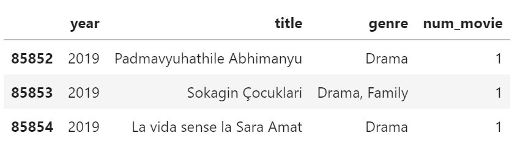
1
2
3
4
5
6
7
8
9
10
11
12
13
14
15
16# 데이터 파일 읽기
import pandas as pd
df_movies = pd.read_csv("IMDb movies.csv")
# year에 껴있는 'TV Movie 2019' 제거
# column 중에서 'year', 'title', 'genre'만 선택
df_yg = df_movies.query("year != 'TV Movie 2019'")[["year", "title", "genre"]]
# 연간 개봉 영화 편수 계산용 column 추가
df_yg["num_movie"] = [1] * df_yg.shape[0]
# 년도 데이터를 정수형으로 변환
df_yg["year"] = df_yg["year"].astype(int)
# 마지막 3줄 확인
df_yg.tail(3)
- 총 85854편, 여러 나라의 다양한 영화가 있습니다.
- 영화 한편에 여러 장르가 있기도 합니다.
- 로맨틱 코미디는 Romance + Comedy 이니 당연합니다.
- 참고로 마블의 아이언맨 시리즈는 Sci-Fi + Adventure + Action입니다.
2.4. 데이터 정리
- 영화 한 편에 중복 분류된 장르들을 한데 모읍니다.
1
2genres = np.unique(', '.join(df_yg['genre']).split(', '))
print(f"{len(genres)} Genres: {genres}")- 실행 결과: 25가지의 장르로 구분되어 있습니다.
1
25 Genres: ['Action' 'Adult' 'Adventure' 'Animation' 'Biography' 'Comedy' 'Crime' 'Documentary' 'Drama' 'Family' 'Fantasy' 'Film-Noir' 'History' 'Horror' 'Music' 'Musical' 'Mystery' 'News' 'Reality-TV' 'Romance' 'Sci-Fi' 'Sport' 'Thriller' 'War' 'Western']
- 실행 결과: 25가지의 장르로 구분되어 있습니다.
- genre라는 하나의 열에 쉼표(,)로 나뉜 장르들을 별도의 열로 만듭니다.
- one-hot encoding 방식이 좋을 것 같습니다.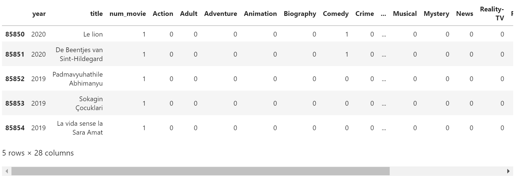
1
2
3
4for genre in genres:
df_yg[genre] = df_yg["genre"].str.contains(genre).astype('int')
df_yg.drop('genre', axis=1, inplace=True)
df_yg.tail()
- 장르별 연간 개봉 편수가 궁금합니다.
groupby로 데이터를 묶고 head와 tail을 모두 살펴봅니다.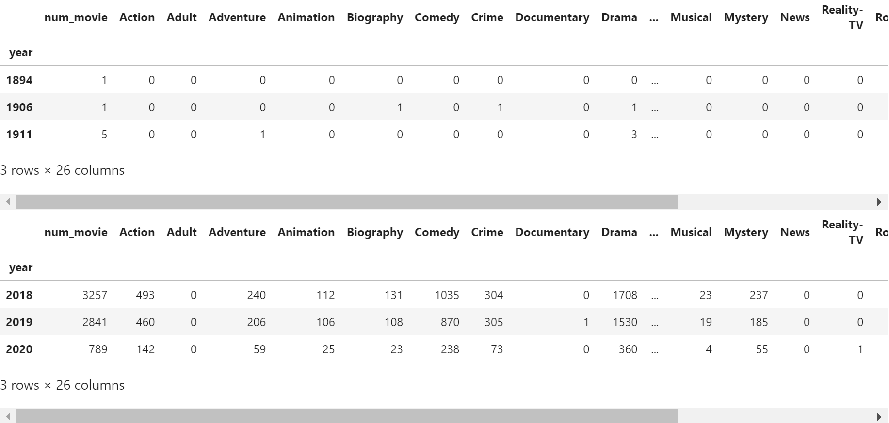1
2
3df_yg_g = df_yg.groupby("year").sum()
display(df_yg_g.head(3))
display(df_yg_g.tail(3))
- 1894년과 1906년에 개봉된 영화가 1편씩 있습니다.
- 각기 Miss Jerry와 The Story of the Kelly Gang이라는 영화입니다.
- 각 해에 한 편 뿐이라 경향성 분석에 적절치 않다고 판단됩니다.
- 데이터셋에서 제거하고 장르별 편 수를 확인합니다.
- 장르가 너무 많으니 상위 10개만 봅니다.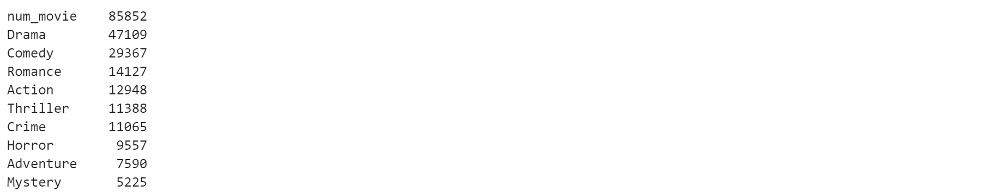
1
2df_yg_g = df_yg_g.loc[df_yg_g.index > 1910]
df_yg_g.sum().sort_values(ascending=False)[:10]
- 총 85852편의 영화가 있고, 드라마가 거의 절반입니다: 47109편
- 2위 코미디, 3위 로맨스까지 오면서 거의 절반씩으로 떨어집니다.
3. 시각화
3.1. 장르별 분포 시각화
방금 숫자로 본 분포를 그림으로도 그려봅니다.
1
2
3
4
5
6num_genre = df_yg_g.sum().sort_values(ascending=False)[1:]
fig, ax = plt.subplots(figsize = (10, 6))
sns.barplot(num_genre.values, num_genre.index, ax=ax)
ax.set_title("Number of Movies by Genre", fontsize="large", fontweight="bold", pad=12)
ax.grid(axis="x")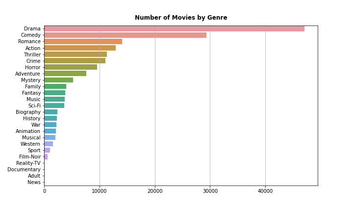
그림으로 보니 숫자와 느낌이 또 다릅니다.
드라마와 코미디를 빼고 시각화를 해야 하나 싶기도 하고,
저 둘을 빼면 다른 장르들이 과대평가될 것도 같습니다.
일단 년도별로 변화가 있을 수 있으니 다 같이 그립니다.
3.2. stacked area plot
관심이 가는 장르 몇 개를 선정합니다.
stacked area chart으로 먼저 그려봅니다.
장르별 영화 편 수를 전체 영화 편 수로 나누어 비중을 그렸습니다.
영화 한 편에 여러 장르가 섞여있어 총 합은 1을 훨씬 넘습니다.
1
2
3
4
5
6
7
8
9
10
11
12# 관심 장르 8개 선정
genres_sel = ['Drama', 'Comedy', 'Romance', 'Action', 'Thriller', 'Crime', 'War', 'Horror', 'Western']
fig, ax = plt.subplots(figsize=(10, 5),
constrained_layout=True)
ax.stackplot(df_yg_g.index,
[df_yg_g[genre]/df_yg_g["num_movie"] for genre in genres_sel],
labels = genres_sel, ec="k", lw=0.3)
handles, labels = ax.get_legend_handles_labels()
ax.legend(handles=handles[::-1], labels=labels[::-1])
ax.set_xlim(df_yg_g.index.min(), df_yg_g.index.max())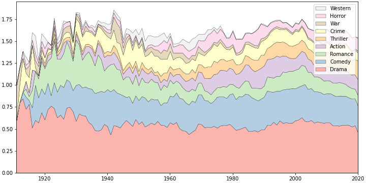
범례에 한 가지 트릭을 심었습니다.
stackplot()은 앞에 오는 데이터부터 아래에서 위로 차례로 쌓아갑니다.반면 범례는 처음 놓인 데이터를 맨 위에 놓고 아래로 내려오며 만들어갑니다.
데이터와 범례의 순서가 반대이기 때문에 그림을 볼 때 다소 혼란스럽습니다.
그림을 먼저 그린 후 Line 10, 11에서 handles와 legend를 추출한 다음 [::-1]로 순서를 뒤집었습니다.
- 그나저나 별로 예쁘지 않습니다.
- stacked area chart의 특성상 정량적 변동은 알기 어렵습니다.
- 기준점이 흔들리기 때문입니다.
- 각 영역의 두께가 넓어지고 좁아지는 추세를 봐야 하는데 뾰족한 노이즈들 때문에 잘 안읽힙니다.
3.3. steamgraph
위 코드에
baseline='weighted_wiggle'하나만 추가합니다.바닥을 영점에서 떼어서 위아래 방향으로 적절한 출렁임이 느껴지게 합니다.
1
2
3
4
5
6
7
8
9
10fig, ax = plt.subplots(figsize=(10, 5),
constrained_layout=True)
ax.stackplot(df_yg_g.index,
[df_yg_g[genre]/df_yg_g["num_movie"] for genre in genres_sel],
labels = genres_sel, ec="k", lw=0.3,
baseline='weighted_wiggle')
handles, labels = ax.get_legend_handles_labels()
ax.legend(handles=handles[::-1], labels=labels[::-1])
ax.set_xlim(df_yg_g.index.min(), df_yg_g.index.max())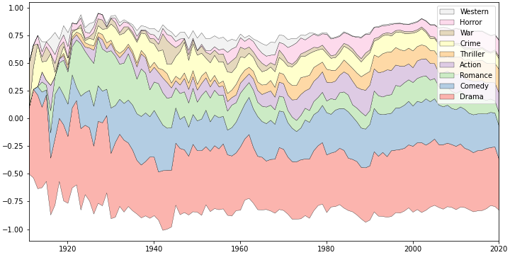
시간에 따른 흐름은 더 잘 느껴집니다.
그런데 크게 꺾이는 그래프가 영 불편합니다.
어차피 정량적으로 볼 그림이 아니기 때문에 선을 부드럽게 합니다.
pandas의
rolling()을 이용하고, gaussian window를 적용합니다.단, 이러면 첫 두 데이터가 NaN이 되므로 첫 두 데이터는 원본 값을 사용합니다.
1
2
3
4df_yg_gs = df_yg_g.rolling(3, win_type='gaussian').mean(std=2)
df_yg_gs.loc[1911] = df_yg_g.loc[1911]
df_yg_gs.loc[1912] = df_yg_g.loc[1912]
df_yg_gs.head(3)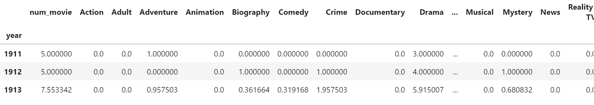
gaussian smoothing한 데이터로 다시 그립니다.
1
2
3
4
5
6
7
8
9
10fig, ax = plt.subplots(figsize=(10, 5),
constrained_layout=True)
ax.stackplot(df_yg_g.index,
[df_yg_gs[genre]/df_yg_gs["num_movie"] for genre in genres_sel],
labels = genres_sel, ec="k", lw=0.3,
baseline='weighted_wiggle')
handles, labels = ax.get_legend_handles_labels()
ax.legend(handles=handles[::-1], labels=labels[::-1])
ax.set_xlim(df_yg_g.index.min(), df_yg_g.index.max())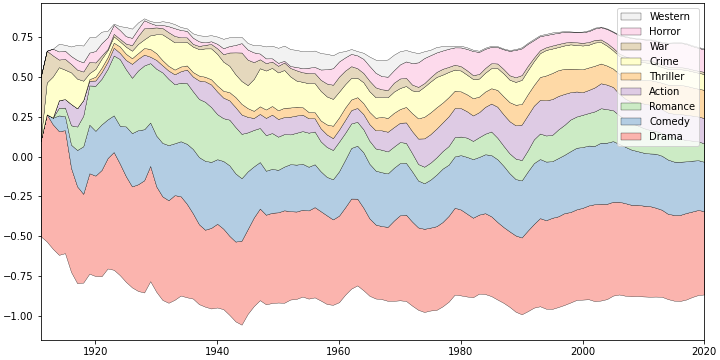
날카로운 면들이 사라지면서 보기가 한결 덜 불편해졌습니다.
그러면서도 전반적인 변동은 모두 유지되어 정성적으로 보기에 적당한 그림이 되었습니다.
3.4. 장르별 순위
- 방금 그린 그림을 보면 몇 가지 재미난 경향이 눈에 띕니다.
- 111년을 이어온 드라마와 코미디의 인기는 참 꾸준합니다.
- 로맨스는 1920, 1930년대 크게 인기를 끌었느나 그 후로는 위세가 전같지 않습니다.
100년 전에는 독보적이었다면 지금은 다른 장르와 경합을 해야 합니다. - 스릴러는 과거에 아주 마이너한 장르였으나 꾸준히 비중을 높여가고 있습니다.
- 전쟁영화는 특정한 시기에 인기가 있습니다. 세계대전과 냉전 시기입니다.
- 서부영화는 조금 슬픕니다. 한때 상당한 인기를 끌었으나 80년대 이후 종적을 감췄습니다.
- 대신 공포영화가 그 점유율을 이어받은 듯한 느낌입니다.
- 장르별 정성적 변화는 좀 알겠는데 간혹 순위가 헷갈리는 것들이 있습니다.
- 예를 들어 1990년대 이후 로맨스와 액션의 순위 변동이 언제 일어났는지 궁금하기도 하고
- 지금 스릴러 영화 수가 범죄영화를 넘어섰는지도 궁금합니다.
- streamgraph의 단점을 보완할 정량적 그래프를 그려봅시다.
- 먼저, 장르별 순위를 계산합니다.
- 2중 for loop보다 더 좋은 방법이 있을 것 같지만 데이터 수가 그다지 많지 않아 진행했습니다.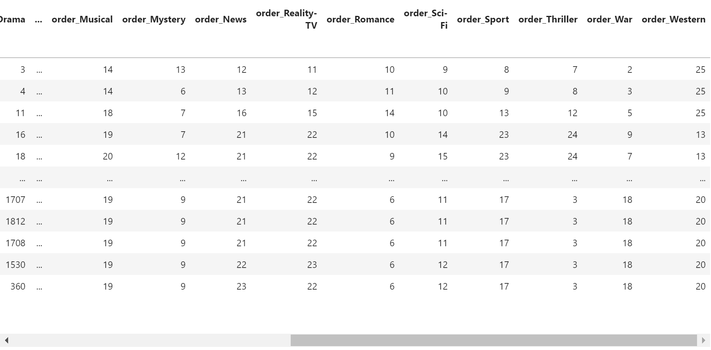
1
2
3
4
5
6
7
8for genre in genres:
df_yg_g[f"order_{genre}"] = np.zeros(df_yg_gs.shape[0], dtype='int')
for idx in df_yg_gs.index:
for order, genre in enumerate(df_yg_gs.loc[idx, genres].sort_values(ascending=False).index, 1):
df_yg_g.loc[idx, f"order_{genre}"] = order
df_yg_g
3.4. Streamgraph + Line plot
- streamgraph와 순위 line plot을 함께 그립니다.
- 정성적 시각화와 정량적 시각화를 함께 해서 서로의 약점을 보완하는 것입니다.
- 심미적 표현을 위해 다음과 같은 사항을 추가했습니다.
- palette 변경: Set3
- 전쟁시기 인기 장르: War와 Western 강조, 세계대전, 한국전, 베트남전 시기 표기
- 영화 패러다임 변화: 1927년 기점 무성영화/유성영화 전환 표기
- 관심 장르 순위 강조: 스릴러, 공포, 로맨스, 범죄 순위 변화 강조
- 상세한 설명은 코드와 주석을 참고해주시기 바랍니다.
코드 보기/접기
1
2
3
4
5
6
7
8
9
10
11
12
13
14
15
16
17
18
19
20
21
22
23
24
25
26
27
28
29
30
31
32
33
34
35
36
37
38
39
40
41
42
43
44
45
46
47
48
49
50
51
52
53
54
55
56
57
58
59
60
61
62
63
64
65
66
67
68
69
70
71
72
73
74
75
76
77
78
79
80
81
82
83
84
85
86
87
88
89
90
91
92
93
94
95
96
97
98
99
100
101
102
103
104
105
106
107
108from matplotlib import colors as mcolor
sns.set_palette("Set3", 10)
genres_sel = ['Drama', 'Comedy', 'Romance', 'Action', 'Thriller', 'Crime', 'War', 'Horror', 'Western']
top7_2020 = df_yg_gs.iloc[-1][genres].sort_values(ascending=False)[:7].index
fig, axs = plt.subplots(nrows=2,
gridspec_kw={"height_ratios":[6, 4], "hspace":0.1},
sharex=True,
figsize=(10, 6),
constrained_layout=True)
# streamgraph: number of release
axs[0].stackplot(df_yg_g.index,
[df_yg_gs[genre]/df_yg_gs["num_movie"] for genre in genres_sel],
labels = genres_sel, ec="k", lw=0.3, alpha=0.6,
baseline='weighted_wiggle')
# War, Western 강조
idx_War = genres_sel.index("War")
axs[0].get_children()[idx_War].set_facecolor("red")
axs[0].get_children()[idx_War].set_alpha(1)
idx_Western = genres_sel.index("Western")
axs[0].get_children()[idx_Western].set_facecolor("brown")
axs[0].get_children()[idx_Western].set_alpha(1)
# legend on streamgraph
handles, labels = axs[0].get_legend_handles_labels()
axs[0].legend(handles=handles[::-1], labels=labels[::-1],
loc="upper left", bbox_to_anchor=(1,1))
# x, y limit
axs[0].set_xlim(df_yg_g.index.min(), df_yg_g.index.max())
axs[0].set_ylim(-1.2, 1.2)
axs[0].axis(False)
# line plot: rank of genre
def color_darker(CN, offset=0.5):
c_rgb = mcolor.to_rgb(CN)
c_hsv = mcolor.rgb_to_hsv(c_rgb)
c_hsv[2] = c_hsv[2] - offset if c_hsv[2] >= offset else 0
return mcolor.hsv_to_rgb(c_hsv)
for i, genre in enumerate(genres_sel):
alpha, lw, fontweight, offset = 0.5, 1, "normal", 0.5
if genre == "War":
continue
if genre in ["Romance", "Thriller", "Crime", "Horror"]:
alpha, lw, fontweight, offset = 1, 3, "bold", 0
axs[1].fill_between(df_yg_g.index, df_yg_g[f"order_{genre}"], 10,
fc=f"C{i}", alpha=0.3)
axs[1].plot(df_yg_g[f"order_{genre}"],
alpha=alpha, lw=lw, c=color_darker(f"C{i}", 0))
if genre in top7_2020:
rank = np.where(top7_2020 == genre)[0][0]
axs[1].text(df_yg_g.index.values[-1]+2, df_yg_g[f"order_{genre}"].values[-1],
f"{rank+1}: {genre}",
transform=axs[1].transData,
va="center", color=color_darker(f"C{i}", 0.5),
fontsize="large", fontweight=fontweight, alpha=1
)
# y axis and spines
axs[1].set_ylim(0, 8)
axs[1].invert_yaxis()
axs[1].yaxis.set_visible(False)
axs[1].spines[["left", "top", "right"]].set_visible(False)
# dark background
axs[1].set_facecolor("0.3")
# titles
font_title={"fontsize":"large", "fontweight":"bold"}
axs[0].set_title("Portion (No. of Released Movies per Year)", fontdict=font_title, pad=12)
axs[1].set_title("Ranking by Portion", fontdict=font_title, pad=12)
# grids
for ax in axs:
xticks = ax.get_xticks()
[ax.axvline(x, c="lightgray", ls=":", alpha=0.5) for x in xticks]
# world war
[axs[0].axvspan(*x, fc="red", alpha=0.2) for x in [(1914, 1918), (1939, 1945)]]
[axs[1].axvspan(*x, fc="mistyrose", alpha=0.3) for x in [(1914, 1918), (1939, 1945)]]
axs[0].text(1918, 1.0, "WW1 ", c="darkred", fontsize="large", fontweight="bold", ha="right")
axs[0].text(1945, 1.0, "WW2 ", c="darkred", fontsize="large", fontweight="bold", ha="right")
# Korean war
axs[0].axvspan(1950, 1953, fc="red", alpha=0.2)
axs[1].axvspan(1950, 1953, fc="mistyrose", alpha=0.3)
axs[0].text(1953, 1.0, " KW", c="darkred", fontsize="large", fontweight="bold", ha="right")
# Korean war
axs[0].axvspan(1955, 1975, fc="red", alpha=0.2)
axs[1].axvspan(1955, 1975, fc="mistyrose", alpha=0.3)
axs[0].text(1975, 1.0, " Vietnam War ", c="darkred", fontsize="large", fontweight="bold", ha="right")
# sound film
axs[0].axvline(1927, c="0.5", ls="--", lw=2)
axs[1].axvline(1927, c="w", ls="--", lw=2)
axs[0].text(1927, -1.5, "silent film ", c="0.4", fontsize="large", fontweight="bold", ha="right")
axs[0].text(1927, -1.5, " sound film (gradually) ", c="0.4", fontsize="large", fontweight="bold", ha="left")
fig.set_facecolor("w")
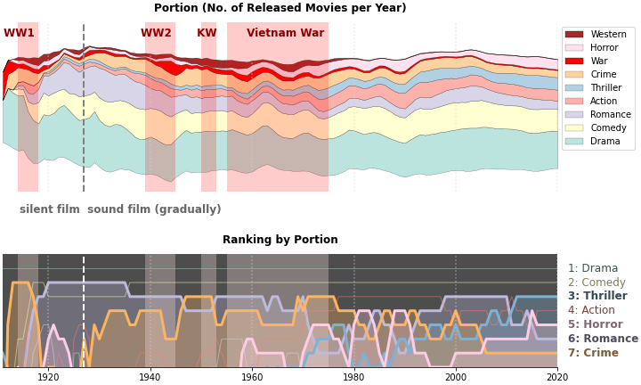
4. 결론
- Kaggle API를 이용해서 데이터를 쉽게 받아올 수 있습니다.
- streamgraph는 시간에 따른 점유율 변화를 표현하기에 유리합니다.
- 그러나 정량적인 데이터 표현이 어렵습니다.
- 보조지표나 보조 plot을 이용해 보완합시다.